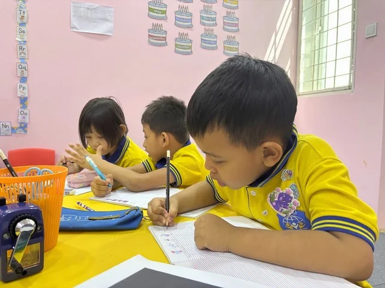
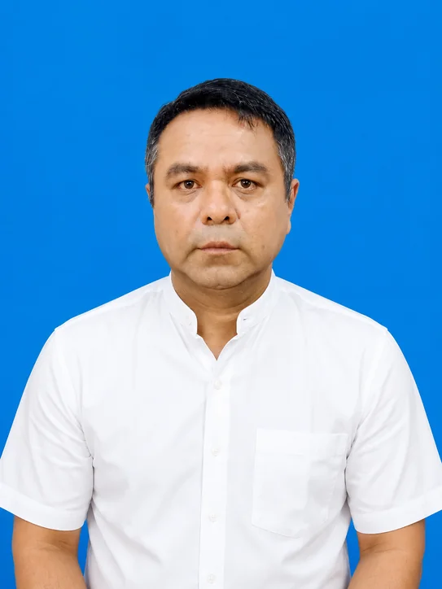
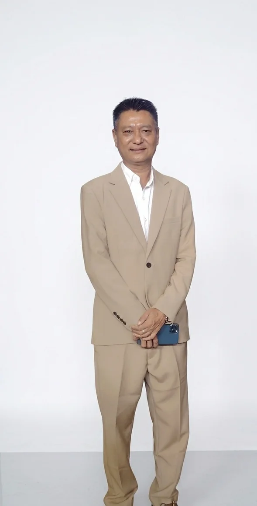
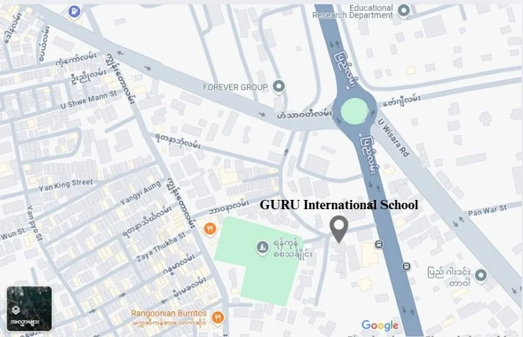

AGES 2–4
Early years
A nurturing beginning, with child-centred learning and room to explore.
- Play SchoolAge 2
- Pre-NurseryAge 3
- NurseryAge 4
Early Year Foundation Stage
Talk about early years ↗BIG DREAMS START HERE · YANGON
A place to wonder, a space to grow. We nurture curious, confident children who are ready to make their mark on the world.
Every Child, Every Dream,
Every Success.

TODAY’S CURIOSITY. TOMORROW’S CONFIDENCE.01 / A SCHOOL WITH HEART
Rooted in Yangon. Open to the world.Childhood is full of questions.
We make space for every one.
GURU International School blends international best practices with local values in a nurturing, inquiry-based environment. Creativity, character, and holistic development help every child grow with confidence and purpose.
Established in January 2025, our school brings families and educators together around one belief: every child deserves the chance to discover their potential.
Discover what guides us ↗A journey from early years to primary
Student–teacher ratio*
Class size in the school profile*
Core values. One shared purpose.
*Figures reported in the supplied school profile. Ask our team for current class availability.
02 / FIND THEIR STARTING POINT
Little steps, thoughtfully connected.From the first “why?” to the next big idea.
Explore our early years and primary pathways.
AGES 2–4
A nurturing beginning, with child-centred learning and room to explore.
Early Year Foundation Stage
Talk about early years ↗AGES 5–7
Build confidence, discover new ideas, and develop a love for learning.
Key Stage 1
Explore their next step ↗AGES 8–11
Deepen curiosity and develop skills to contribute positively to the world.
Key Stage 2
Discover upper primary ↗03 / LIFE, IN FULL COLOUR
Real moments from our school.STEAM, arts, languages, and sports bring new ways to explore beyond everyday lessons.
04 / WHAT MAKES US GURU
Being honest, fair, and respectful.
A love for learning and discovery.
Valuing diversity, kindness, and dignity.
Doing our best in everything we do.
Understanding and caring for others.
Our visionA community where students explore, discover, and excel, empowered to become responsible, thoughtful leaders.
Our approachChild-centred pedagogy, inquiry-based learning, differentiated instruction, and technology integration.
05 / SPACES THAT INSPIRE
San Chaung, YangonAlso in our school: a library, PE playground and sports area, and a multipurpose hall.
06 / PEOPLE WHO CARE
A shared commitment to every child.Educators who nurture potential.
Leaders who make room for it.

PRINCIPAL / HEAD OF SCHOOL
Nearly 30 years in Myanmar’s education sector, with experience in school leadership, teacher development, curriculum alignment, and Biology education.
FOUNDER
Committed to unlocking every student's potential and nurturing responsible, compassionate leaders.

CHAIRMAN
Provides strategic guidance for the school’s long-term development and educational mission.
CHIEF EXECUTIVE OFFICER
Chief Executive Officer of GURU International School.
HR & OPERATIONS MANAGER
HR and Operations Manager of GURU International School.
FAMILIES BELONG HERE, TOO.
Families and teachers collaborate to support better student outcomes.
Share student progress and discuss school-wide improvements in a welcoming setting.
Meetings are held once per term after assessments, keeping families involved in their child's learning.
The supplied profile reports a Yangon City Development Committee licence and compliance with Myanmar Ministry of Education procedures. Pearson accreditation and preschool licensing are described as being pursued. Contact the school for the latest status.
YOUR CHILD’S NEXT CHAPTER
The best way to get to know Guru? Step inside.
Speak with our team to arrange a visit and explore the right programme for your child.
FIND US IN YANGON

View on Google Maps ↗Open directions ↗